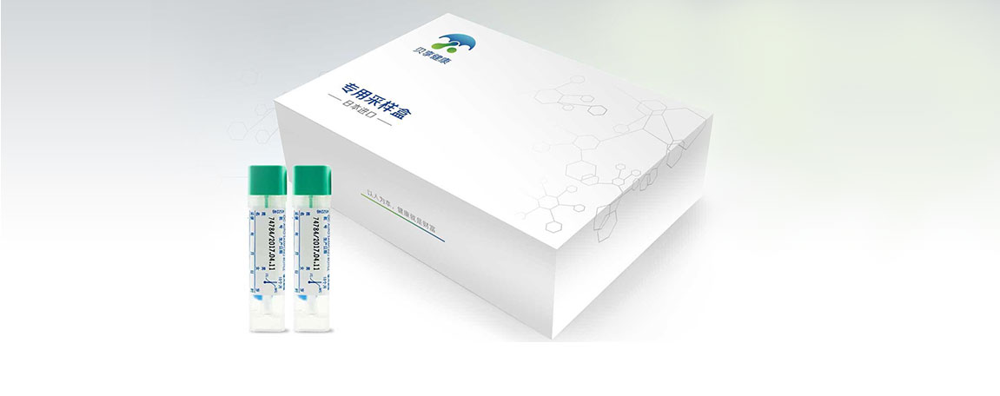
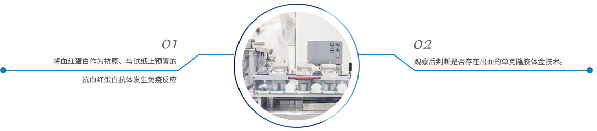

完整疗愈健康管理中心
通过生物电，生物共振，能量学，心理等方法，综合对客人进行细胞层面的保养，尤其是线粒体ATP层面上的保养。
便潜血是指消化道少量出血，红细胞被消化破坏，粪便外观无异常改变，肉眼和显微镜均不能证实的出血。便潜血试验一般用化学试验来检测粪便中微量的、肉眼看不到的血液。但正常人24h的胃肠道生理性失血量约0.6ml，用化学法潜血试验（可检出消化道出血1ml以上）一般也难以检出。
免疫法便潜血定量检测应用的OC-全自动便潜血分析仪和便潜血检测试剂（乳胶免疫比浊法）均经国家食品药监局（CFDA）审核批准注册，免疫法便潜血定量检测克服了传统便潜血筛查（胶体金试纸法）在卫生条件、准确性、样本保存时间等方面的不足。不受地域限制，让每一个家庭从中收益。
引起便隐血的常见病因
免疫法便潜血定量检测
基因检测定制流程
免疫法便潜血定量检测优势